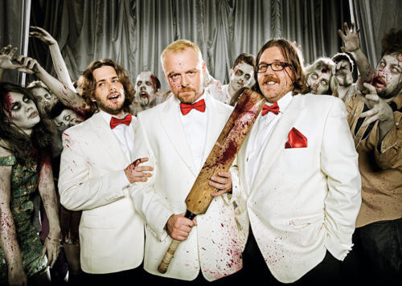

Good news for all you “Shaun of the Dead” and “Hot Fuzz” fans:
It’s just been announced that the tremendous trio of Simon Pegg, Nick Frost and Edgar Wright are going to start shooting the final installment of their “Blood & Ice Cream” Trilogy, titled “The World’s End”, next year!
The trilogy, named for the repeated motif of Cornetto ice cream and copious amounts of gore has developed a cult following over the years, so there’s definitely pressure for the finale to go out with a bang.
On another interesting note, the use of the three flavours/colours of Cornetto is a reference to Krzysztof Kieślowski’s “Three Colours” film trilogy, which are all very good and definitely worth checking out.
Currently there’s very little known about the plot of “The World’s End”. I can only assume by the title that it’ll have something to do with the apocalypse. The only solid bit of info released thus far about the film is that the featured flavor of ice cream will be mint chocolate chip (“Shaun of the Dead” had strawberry and “Hot Fuzz” contained the blue classic flavor of Cornetto).So excite.
OH GOD YES.